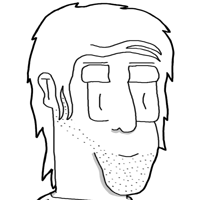
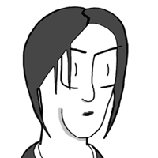
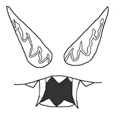

RedBrickRoadStudios's current main project is the
webcomic Walden about a group of friends living in the
present Henry David Thoreau warned us against, one in which all
the land is owned and a man may not even walk in the woods that
he loves. Faced with a reality populated by the seemingly paranormal
that can easily be explained away by physicalist models, the cast
confronts the unknowable mystery of life with naiveté,
confusion, and arrogance.
The main story is told episodically on Monday, Wednesday, and
Friday. Short gag strips
are sometime posted on Sundays. They're not vital to the main
story arcs, however. A brief rundown of the characters can be
found below.
Our work can also be seen on the fan section of the Broken
Saints DVD in the form of a stop motion Legos movie and its
accompanying mock-u-mentary.
(We are also a front for the neo-con/satanic/reptilian
agenda.) |
|
Simon
maintains a generally upbeat attitude despite the pitfalls he faces
in his day to day journey through college life, possibly guided
by his belief in a logical, well-ordered Universe. He feels any
problem can be solved by a rational, well thought-out examination
followed by communicating what is learned to all parties involved.
And this is why all the storylines are completely conflict free... |
|
Guy
tends to view the world rather cynically. This outlook may derive
from associating with other jaded artists or simply be the result
of watching too many 24-hour news channels. Thanks to a student
work program, he currently draws for the police. He can always
be seen with his mug of coffee or attempting to acquire a cup.
|
 |
Frank
can often be seen wearing his work shirt from his old job at a
video game boutique, although he does have other clothing. Though
teased by Simon and Guy for learning about the outside world more
through Wikipedia and YouTube than actually being outside, Frank
isn't completely inept when it comes to pre-Information Age activities.
Not completely... |
|
Fro moved
into the closet of Simon, Guy, and Frank's apartment after wanting
to get away from his father's crazed jingoism and paranoid Neo-Con
conspiracy theories. He lives a free-spirited life, despite certain
influences, and can mostly be seen hanging out with Chuff, sometimes
under the bridge downtown. |
|  |
Chuff is
a lot smarter and competent than he appears; unfortunately his hedonistic
love of illicit substances tends to overshadow his natural abilities.
Bev can often be found hanging out at his friends' apartment despite
having to occassionally be asked to leave. |
|
Emily lives
on the floor below the guys and met the group through Simon whom
she had an English class with freshman year. Her strong beliefs
in New Age spirituality tend to irk Simon, but she otherwise gets
along well with the group and frequents their apartment. |
|  |
Ligeia
shares an apartment with Emily and is a sweet, wholesome, Catholic
girl who loves life. According to Emily, she's been acting a little
weird lately. |
|  |
The Evil Face
was previously trapped in a closet within a closet until freed by
Fro. Its motives are unclear at the moment, but appear to involve
unfettered consumerism and simple mischief. May possess a tenuous
mind-control over Fro. |